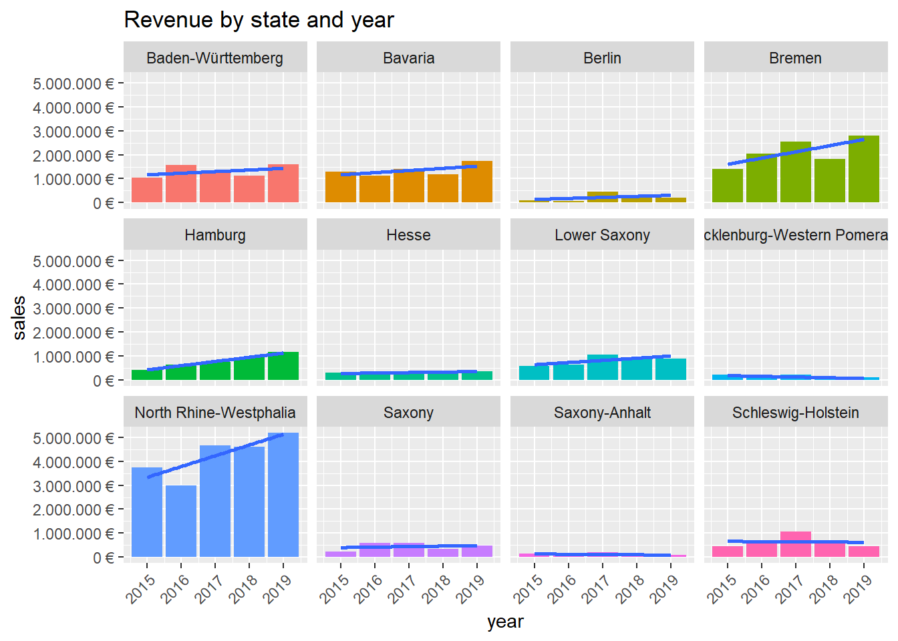
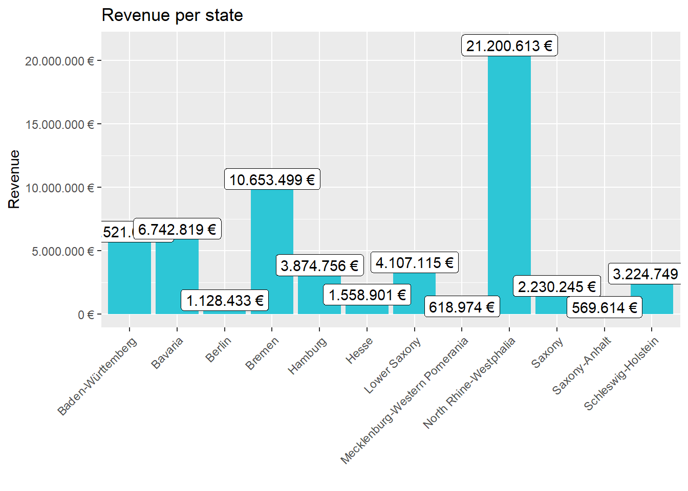

Journal (reproducible report)
Sarah Grube
2020-11-05
BASIC DATA SCIENCE BASIC: Lab-journal over the Challenge which had to be solved.
1 Challenge 1
Last compiled: 2020-12-01
1.1 Analyze the sales by states
In the following code-window you can see the code for plotting the revenues of each state in a bar chart. As you can see in the figure, Nort Rhine-Westphalia has the highest revenues with 21200613 Euros.
# 1.0 Load Libraries
library(tidyverse)
library(readxl) # excel-files
library(magrittr)
library(writexl)
library(lubridate)
# 2.0 Importing Files ----
bikes_tbl <- read_excel(path = "DS_101/00_data/01_bike_sales/01_raw_data/bikes.xlsx")
orderlines_tbl <- read_excel("DS_101/00_data/01_bike_sales/01_raw_data/orderlines.xlsx")
bikeshops_tbl <- read_excel("DS_101/00_data/01_bike_sales/01_raw_data/bikeshops.xlsx")
# 3.0 Joining Data ----
bike_orderlines_joined_tbl <- orderlines_tbl %>%
left_join(bikes_tbl, by = c("product.id" = "bike.id")) %>%
left_join(bikeshops_tbl, by = c("customer.id" = "bikeshop.id"))
# 4.0 Wrangling Data ----
bike_orderlines_wrangled_tbl <- bike_orderlines_joined_tbl
# 4.1 Separate category name
bike_orderlines_wrangled_tbl <- separate(bike_orderlines_wrangled_tbl,
col = location,
into = c("city", "state"),
sep = ", ")
# 4.2 Add the total price (price * quantity)
bike_orderlines_wrangled_tbl <- mutate(bike_orderlines_wrangled_tbl, total_price = price * quantity)
# 4.3.4 You can reorder the data by selecting the columns in your desired order.
bike_orderlines_wrangled_tbl <- select(bike_orderlines_wrangled_tbl, city, state, total_price, everything())
# 5.0 Business Insights ----
# 5.1 Sales by State ----
# Step 1 - Manipulate
sales_by_location_tbl <- bike_orderlines_wrangled_tbl
# SALES BY STATE
# Grouping by state and summarizing sales
sales_by_state_tbl <- group_by(sales_by_location_tbl, state)
sales_by_state_tbl<- summarize(sales_by_state_tbl, sales = sum(total_price))
sales_by_state_tbl <- mutate(sales_by_state_tbl, sales_text = scales::dollar(sales, big.mark = ".",
decimal.mark = ",",prefix = "", suffix = " €"))
# Step 2 - Visualize
sales_by_state_tbl %>%
# Setup canvas with the columns state (x-axis) and sales (y-axis)
# {r plot, fig.width=10, fig.height=7}
ggplot(aes(x = state, y = sales)) +
theme(axis.text.x = element_text(angle = 45, hjust = 1)) +
# Geometries
geom_col(fill = "#2DC6D6") + # Use geom_col for a bar plot
geom_label(aes(label = sales_text)) + # Adding labels to the bars
geom_smooth(method = "lm", se = FALSE) + # Adding a trendline
# adjust it for euro values
scale_y_continuous(labels = scales::dollar_format(big.mark = ".",
decimal.mark = ",",
prefix = "",
suffix = " €")) +
labs(
title = "Revenue per state",
#subtitle = "Upward Trend",
x = "", # Override defaults for x and y
y = "Revenue"
)
1.2 Analyze the sales by location (state) and year
library(tidyverse)
library(readxl) # excel-files
library(magrittr)
library(writexl)
library(lubridate)
# 6.2 Sales by State and Year ----
# Step 1 - Manipulate
sales_by_year_state_tbl <- bike_orderlines_wrangled_tbl %>%
# Select columns and add a year
select(order.date, total_price, state) %>%
mutate(year = year(order.date)) %>%
# Group by state and summarize year and main catgegory
group_by(state, year) %>%
summarise(sales = sum(total_price)) %>%
ungroup() %>%
# Format $ Text
mutate(sales_text = scales::dollar(sales, big.mark = ".",
decimal.mark = ",",
prefix = "",
suffix = " €"))
# Step 2 - Visualize
sales_by_year_state_tbl %>%
# Set up x, y, fill
ggplot(aes(x = year, y =sales, fill = state)) +
theme(axis.text.x = element_text(angle = 45, hjust = 1)) +
theme(legend.position = "none")+
# Geometries
geom_col() + # Run up to here to get a stacked bar plot
geom_smooth(method = "lm", se = FALSE) + # Adding a trendline
# Facet
facet_wrap(~ state) +
# Formatting
scale_y_continuous(labels = scales::dollar_format(big.mark = ".",
decimal.mark = ",",
prefix = "",
suffix = " €")) +
labs(
title = "Revenue by state and year",
fill = "Main category" # Changes the legend name
)
2 Challenge 2
2.1 Get some data via an API
Last compiled: 2020-12-01
I looked for an API which gives a list of historical motor racing drivers. First of all I had a look at all given datas. After that I picked a few categories which gve information over the drivers and sorted the drivers by the year birth. Furthermore I resorted the columns and added an additional line which only contains the year of birth and placed it as first column to have a better overview.
# 1.0 Load Libraries
library(httr)
library(tibble)
library(jsonlite)
library(tidyverse)
# 1.0 Load API-data
res <- fromJSON('http://ergast.com/api/f1/2004/1/results.json')
drivers <- res$MRData$RaceTable$Races$Results[[1]]$Driver
colnames(drivers)## [1] "driverId" "code" "url" "givenName"
## [5] "familyName" "dateOfBirth" "nationality" "permanentNumber"# 2.0 Wrangling Data
dirvers_list <- drivers[1:8, c("givenName", "familyName", "code", "nationality", "dateOfBirth")]
dirvers_list <- mutate(dirvers_list, yearOfBirth = year(dateOfBirth))
dirvers_list <- select(dirvers_list, yearOfBirth, nationality, everything())
print(dirvers_list,right=F)## yearOfBirth nationality givenName familyName code dateOfBirth
## 1 1969 German Michael Schumacher MSC 1969-01-03
## 2 1972 Brazilian Rubens Barrichello BAR 1972-05-23
## 3 1981 Spanish Fernando Alonso ALO 1981-07-29
## 4 1975 German Ralf Schumacher SCH 1975-06-30
## 5 1975 Colombian Juan Pablo Montoya MON 1975-09-20
## 6 1980 British Jenson Button BUT 1980-01-19
## 7 1974 Italian Jarno Trulli TRU 1974-07-13
## 8 1971 British David Coulthard COU 1971-03-272.2 Get data from a competitor of canyom
For this challenge I chose to acquire date of the company rosebikes. Therefor I had a closer look on the race model X-LITE FOUR DISC. For this model you can find four sub-models which are listed in the following tabular together with its prices.
# 1.0 Load Libraries
library(tidyverse) # Main Package - Loads dplyr, purrr, etc.
library(rvest) # HTML Hacking & Web Scraping
library(xopen) # Quickly opening URLs
library(jsonlite) # converts JSON files to R objects
library(glue) # concatenate strings
library(stringi) # character string/text processing
# 2.0 Call the website
# model names and prices for at least one category
url_rennrad <- "https://www.rosebikes.de/fahrr%C3%A4der/rennrad/race/x-lite-four-disc"
html_rennrad <- read_html(url_rennrad)
# 3.0 Get the data
# 3.1 Store the names of the bike model
rennrad_tbl <- html_rennrad %>%
html_nodes(css = ".catalog-category-model__title") %>%
html_text() %>%
stringr::str_extract("(?<=\\n).*(?=\\n)")
# 3.2 Store the prices
prices_tbl <- html_rennrad %>%
html_nodes(css = ".catalog-category-model__price-current-value") %>%
html_text() %>%
stringr::str_extract("(?<=\\n).*(?=,)")
prices_tbl <- gsub('[㠼㸰]', '', prices_tbl)
prices_tbl <- gsub('[.]', ',', prices_tbl)
prices_tbl <- gsub("[[:space:]]", "", prices_tbl)
# 4.0 create a list with bike-name and price
list2 <- data.frame(Bike_name=rennrad_tbl,
price_in_Euros = prices_tbl)
list2 <- format(list2, justify = "left")
print(list2,right=F)## Bike_name price_in_Euros
## 1 X-LITE FOUR DISC 105 2,699
## 2 X-LITE FOUR DISC Ultegra 2,999
## 3 X-LITE FOUR DISC Ultegra Di2 3,599
## 4 X-LITE FOUR DISC Force eTap AXS 3,7993 Challenge 3
In this challenge 3 questions had do be answered. ## Task 1: Patent Dominance What US company / corporation has the most patents? List the 10 US companies with the most assigned/granted patents. To answer this question I summed the patents per company and listed the number of total patents by descending order so that the top-10-companies could be found in the first 10 columns.
# 1.0 Load librarys
library(tidyverse)
library(vroom)
library(data.table)
library(vroom)
# 2.0 Load Data: patent_assignee.tsv, assignee.tsv
patentAssignee_tbl <- vroom(
file = "patent_assignee.tsv",
delim = "\t",
# col_types = col_types,
na = c("", "NA", "NULL")
)
assignee_tbl <- vroom(
file = "assignee.tsv",
delim = "\t",
#col_types = col_types,
na = c("", "NA", "NULL")
)
# 3.0 Merge the data + create data table
assigneeMerged <- merge(x = patentAssignee_tbl, y = assignee_tbl, by.x='assignee_id', by.y = "id", all = T)
# create Data table
class(assigneeMerged)
setDT(assigneeMerged)
class(assigneeMerged)
assigneeMerged %>% glimpse()
# 4.0 group + sum by company
setkey(assigneeMerged, "organization")
key(assigneeMerged)
assigneeMergedCount <- assigneeMerged %>%
filter(!is.na(organization)) %>%
count(organization)
assigneeMergedCount <- assigneeMergedCount %>%
arrange(desc(n))
## List the 10 US companies with the most assigned/granted patents
top10 <- assigneeMergedCount[1:10]
write_rds(top10, "top10.rds")library(readr)
library(data.table)
result <- read_rds("02_data_wrangling/top10.rds")
result## organization n
## 1: International Business Machines Corporation 139092
## 2: Samsung Electronics Co., Ltd. 93562
## 3: Canon Kabushiki Kaisha 75910
## 4: Sony Corporation 54343
## 5: Kabushiki Kaisha Toshiba 49443
## 6: General Electric Company 47122
## 7: Hitachi, Ltd. 45375
## 8: Intel Corporation 42157
## 9: Fujitsu Limited 37197
## 10: Hewlett-Packard Development Company, L.P. 355733.1 Task 2: Recent patent acitivity
What US company had the most patents granted in 2019? List the top 10 companies with the most new granted patents for 2019. To solve this task I first merged put all the tables into one table and removed all datas which weren’t from 2019. Than again I counted the number of patents per company and sorted the number in descending order.
# 1.0 Load librarys
library(tidyverse)
library(vroom)
library(data.table)
library(vroom)
# 2.0 load necessary data
col_types <- list(
id = col_character(),
country = col_character(),
date = col_date("%Y-%m-%d")
)
patent_tbl <- vroom(file = "patent.tsv", delim = "\t", col_types = col_types, na = c("", "NA", "NULL"), col_select = c(id, country, date))
# replace whole date by year
patent_tbl <- mutate(patent_tbl, date = year(date))
# load merged data-table from previous task
assigneMerged_tbl <- read_rds("assigneMerged_tbl.rds")
assigneMerged_tbl <- select(assigneMerged_tbl, patent_id, organization)
# merge the tables
patent_tbl <- merge(x = assigneMerged_tbl, y = patent_tbl, by.x='patent_id', by.y = "id", all = T)
# select year 2019 and display in descending order
patent2019_tbl <- patent_tbl %>%
select(date, organization) %>%
filter(date == 2019)
patent2019_tbl <- patent2019_tbl %>%
filter(!is.na(organization)) %>%
count(organization)
patent2019_tbl <- patent2019_tbl %>%
arrange(desc(n))
top10_2019 <- patent2019_tbl[1:10]
write_rds(top10_2019, "top10_2019.rds")library(readr)
library(data.table)
result_2019 <- read_rds("02_data_wrangling/top10_2019.rds")
result_2019## organization n
## 1: International Business Machines Corporation 9265
## 2: Samsung Electronics Co., Ltd. 7205
## 3: Canon Kabushiki Kaisha 3595
## 4: Intel Corporation 3526
## 5: LG Electronics Inc. 3314
## 6: Microsoft Technology Licensing, LLC 3106
## 7: Apple Inc. 2817
## 8: Ford Global Technologies, LLC 2624
## 9: Amazon Technologies, Inc. 2533
## 10: Huawei Technologies Co., Ltd. 24543.2 Task 3: Top 5 main classes from the top 10 countries
What is the most innovative tech sector? For the top 10 companies (worldwide) with the most patents, what are the top 5 USPTO tech main classes?
For this task I filtered the merged tables by the top-10-countries from the previous task. The created data set only contains the data from the top-10-countries and thus the task could be solved easily by counting and arranging in descendant order.
# 1.0 Load librarys
library(tidyverse)
library(vroom)
library(data.table)
library(vroom)
# 2.0 load necessary data
uspc_tbl <- vroom(
file = "uspc.tsv",
delim = "\t",
na = c("", "NA", "NULL")
)
# top 10 countries which have been determined in task 1
top10_tbl <- read_rds("top10.rds")
top10_tbl <- top10_tbl$organization
# load merged data-table from previous task (assignee + patent_assignee)
assigneMerged_tbl <- read_rds("assigneMerged_tbl.rds")
assigneMerged_tbl <- select(assigneMerged_tbl, patent_id, organization)
# 3.0 Data processing
# merge the tables by patent_id
assigneMerged_tbl <- merge(x = assigneMerged_tbl, y = uspc_tbl, by.x='patent_id', by.y = "patent_id", all = T)
# filter out NA-values and only show top-10-countries
assigneMerged_tbl <- assigneMerged_tbl %>%
filter(!is.na(mainclass_id))
assigneMerged_tbl <- assigneMerged_tbl %>%
filter(organization %in% top10_tbl)
# calculate top 10 main classes
mainclassID_tbl <- assigneMerged_tbl %>%
count(mainclass_id)
mainclassID_tbl <- arrange(mainclassID_tbl, desc(n))
# save result
top10_maincladdID <- mainclassID_tbl[1:5]
write_rds(top10_maincladdID, "top10_mainclassID.rds")library(readr)
library(data.table)
result_top5 <- read_rds("02_data_wrangling/top10_mainclassID.rds")
result_top5## mainclass_id n
## 1: 257 90981
## 2: 438 52071
## 3: 365 40283
## 4: 370 36369
## 5: 358 362274 Challenge 4
4.1 Graph with the cumulative COVID-19 cases
Map the time course of the cumulative Covid-19 cases!
First of all I loaded the necessary data and filtered it by the year 2020. As the cumulative cases were already given in the data-set, I plotted the cumulative-case-value for each day. I used labels in the graph to plot the most recent Cumulative-case-value from the displayed countries.
# 1.0 Library
library(tidyverse)
library(ggrepel)
#2.0 Load + merge Data
covid_data_tbl <- read_csv("https://opendata.ecdc.europa.eu/covid19/casedistribution/csv") %>%
select(month, year, day, countriesAndTerritories, starts_with("Cumulative_number_for"),dateRep) %>%
mutate(across(countriesAndTerritories, str_replace_all, "_", " ")) %>%
mutate(countriesAndTerritories = case_when(
countriesAndTerritories == "United Kingdom" ~ "UK",
countriesAndTerritories == "United States of America" ~ "USA",
countriesAndTerritories == "Czechia" ~ "Czech Republic",
TRUE ~ countriesAndTerritories
)) %>%
filter(countriesAndTerritories %in% c("Germany", "UK", "France", "Spain", "USA")) %>%
filter(year == 2020) %>%
filter(month < 12) %>%
group_by(countriesAndTerritories, month) %>%
ungroup()
names(covid_data_tbl)[5] <- "Cumulative_number"
# variables for labeling the newest COVID-number
xy <- covid_data_tbl %>%
filter(dateRep == "30/11/2020")
label = xy$Cumulative_number
y <- xy$Cumulative_number
x<- as.Date(lubridate::dmy(xy$dateRep))
# 3.0 Create Graph
covid_data_tbl %>%
ggplot(aes(as.Date(lubridate::dmy(dateRep)), Cumulative_number, color = countriesAndTerritories)) +
geom_line(size = 1) +
labs(
title = str_glue("Cumulative COVID-19 cases per wodlwide"),
subtitle = str_glue(
"Start: {(min(lubridate::dmy(covid_data_tbl$dateRep)))}
End: {(max(lubridate::dmy(covid_data_tbl$dateRep)))}"),
x = "Year 2020",
y = "Cumulative Cases"
) +
scale_x_date(breaks = function(x) seq.Date(from = min(x),
to = max(x),
by = "1 month")) +
scale_color_manual("Countries:", values=c("red", "blue", "green", "purple", "black"), labels = waiver())+
guides(col = guide_legend(nrow = 2))+
theme(
axis.text.x = element_text(angle = 45, hjust = 1),
legend.position = "bottom",
plot.title = element_text(face = "bold"),
plot.caption = element_text(face = "bold.italic", color = "blue4")
) +
geom_label_repel(aes(x = x, y = y, label = label), data = xy)
World Map showing the death-rate.
4.2 World-map with COVID-19 deaths relative to population size
Visualize the distribution of the mortality rate (deaths / population) with geom_map().
For solving this task I first loaded the necessary data and then the world-map could be createt with the help of map_data(“world”) and the geom_map function.
# 1.0 Library
library(tidyverse)
library(ggrepel)
# 2.0 Load + merge data
death_tbl <- read_csv("https://opendata.ecdc.europa.eu/covid19/casedistribution/csv") %>%
select(deaths, countriesAndTerritories, popData2019,dateRep, countryterritoryCode) %>%
mutate(across(countriesAndTerritories, str_replace_all, "_", " ")) %>%
mutate(countriesAndTerritories = case_when(
countriesAndTerritories == "United Kingdom" ~ "UK",
countriesAndTerritories == "United States of America" ~ "USA",
countriesAndTerritories == "Czechia" ~ "Czech Republic",
TRUE ~ countriesAndTerritories
)) %>%
group_by(countriesAndTerritories, popData2019) %>%
summarize(deaths = sum(deaths)) %>%
mutate(deaths = (deaths/popData2019)*100) %>%
select(countriesAndTerritories, deaths)
# 3.0 Create the worldmap with death-rates
world <- map_data("world")
life.exp.map <- merge(x=death_tbl, y=world_map, by.x = "countriesAndTerritories", by.y = "region")
ggplot(life.exp.map, aes(map_id = countriesAndTerritories, fill = deaths))+
geom_map(aes(map_id = countriesAndTerritories), map = world )+
expand_limits(x = life.exp.map$long, y = life.exp.map$lat)+
#coord_fixed() +
labs(
title = str_glue("Confirmed COVID-19 deaths realtive to population size"),
subtitle = str_glue("More than 1.2 Million confirmed COVID-19 deaths worldwide"),
x = "Longitude",
y = "Latitude"
) +
scale_fill_continuous(name = "Death in %")World Map showing the death-rate.
======= >>>>>>> parent of b52b1ff… task 3 # Adding R stuff
So far this is just a blog where you can write in plain text and serve your writing to a webpage. One of the main purposes of this lab journal is to record your progress learning R. The reason I am asking you to use this process is because you can both make a website, and a lab journal, and learn R all in R-studio. This makes everything really convenient and in the same place.
So, let’s say you are learning how to make a histogram in R. For example, maybe you want to sample 100 numbers from a normal distribution with mean = 0, and standard deviation = 1, and then you want to plot a histogram. You can do this right here by using an r code block, like this:
samples <- rnorm(100, mean=0, sd=1)
hist(samples)
When you knit this R Markdown document, you will see that the histogram is printed to the page, along with the R code. This document can be set up to hide the R code in the webpage, just delete the comment (hashtag) from the cold folding option in the yaml header up top. For purposes of letting yourself see the code, and me see the code, best to keep it the way that it is. You’ll learn that all of these things and more can be customized in each R code block.